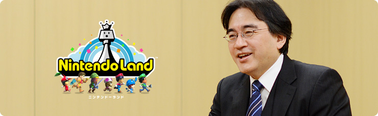
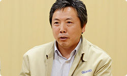
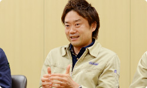

<div class="l-category-local-header">
<div class="category-local-header">
<div class="category-local-heading"><span>社長が訊く</span>
<div class="category-local-sub">IWATA ASKS


<div class="l-soft-topic-path is-block">
<div class="l-soft-topic-path-inner">
<div class="soft-topic-path">
<ul class="topic-path"><li class="topic-path-item"><span>『Wii U』 Nintendo Land篇</span></li></ul>


<div id="page-container">
<header class="interviewheader">
<h2 class="interviewheader__ttl"><span class="subtext">社長が訊く</span>『Wii U』</h2>

</header>
<div class="tabmenu-container">
<p class="tabmenu__ttl">シリーズ一覧
<ul class="tabmenu__body tabnum12">
<li class="tabmenu__item tab1">本体 篇</li>
<li class="tabmenu__item tab2">Wii U GamePad 篇</li>
<li class="tabmenu__item tab3">Miiverse プロデュース 篇</li>
<li class="tabmenu__item tab4">Miiverse 開発スタッフ 篇</li>
<li class="tabmenu__item tab5">インターネットブラウザー 篇</li>
<li class="tabmenu__item tab6">Wii U Chat 篇</li>
<li class="tabmenu__item tab7">New スーパーマリオブラザーズ U 篇</li>
<li class="tabmenu__item tab8">ZombiU（ゾンビU） 篇</li>
<li class="tabmenu__item tab9">Nintendo×JOYSOUND Wii カラオケ U 篇</li>
<li class="tabmenu__item tab10">Nintendo Land 篇</li>
<li class="tabmenu__item tab11">Nintendo TVii 篇</li>
<li class="tabmenu__item tab12">Wii Street U powered by Google 篇</li>
</ul>

<div class="hero-container">
<div class="hero__img">

<div class="interviewsubheader">
<div class="interviewsubheader__ttl"><h2>Nintendo Land篇</h2>

<div class="pageindex-container">
<p class="pageindex__ttl">目次
<ul class="pageindex__body">
<li class="pageindex__item">1. 開発はWii Uとほぼ同時にはじまった</li>
<li class="pageindex__item">2. 機能からのデザイン</li>
<li class="pageindex__item">3. クリアしてからが「本番」</li>
<li class="pageindex__item active">4. 「チームスポーツのように」</li>
<li class="pageindex__item">5. 「生きている人がいる」</li>
</ul>

<div class="interview-container">
<h3 class="interview__ttl">4. 「チームスポーツのように」</h3>

岩田
: では、実際にできあがったものについて、<br>周りからどんな反応がありましたか？


嶋村
: とくにＥ３の時に感じたのは、<br>「一言で魅力をお伝えするのが難しい商品だ」<br>ということです。


岩田
: たしかに、テニスのラケットに見立てて<br>Wiiリモコンを振っている人を見れば、<br>『Wiiスポーツ』がどんなソフトかわかるのと比べて、<br>『Nintendo Land』は一言で伝えるのが難しいですね。


嶋村
: ただ、最後の仕上げの段階で、<br>家族モニターを実施したんですけど、<br>５～６歳くらいのお子さんから７０歳ぐらいの方に、<br>何も説明しないでさわってもらったんです。<br>そしたらお子さんたちはどんどん吸収して、<br>「おばあちゃん、違う違う」って説明しながら、<br>みんなでいつの間にか遊んでいるんですね。<br>さわっていただくと、ゲームに慣れておられない方も、<br>楽しそうに仲間内で解決しあっていただけるようです。


江口
: 「実際に体験して、はじめて理解してもらえる」<br>というもどかしさは、じつはいまも続いています。<br>ただ、遊んでいる方たちの様子を見ていると、<br>いままでのマルチプレイとは違う<br>コミュニケーションの起こりかたなので、<br>「場が盛り上がるはず」と強く思っています。




岩田
: いままでの多人数ゲームは<br>同じくらいの実力ならすごく楽しいけど、<br>実力差があると「双方が同じように<br>楽しむことが難しい」と感じていました。<br>でも『Nintendo Land』の遊びのいくつかは、<br>技量の違う人がいても、遊べる感じがします。


山下
: そういえば・・・この前、<br>宮本さんや手塚（卓志）さん（※14）と<br>みんなで「<span>マリオチェイス</span>」を遊ぶ機会があって、<br>宮本さんがこのゲームに慣れていないものだから、<br>動きがちょっと「素人」っぽかったんです。

※14手塚卓志＝情報開発本部制作部統括。『スーパーマリオ』シリーズや『ヨッシー』シリーズ、『どうぶつの森』シリーズなど、数多くのゲーム開発にかかわる。過去、<span>社長が訊く「スーパーマリオ２５周年」『スーパーマリオ』生みの親たち 篇</span>、<span>社長が訊く『ゼルダの伝説 大地の汽笛』携帯機ゼルダの歴史 篇</span>、<span>社長が訊く『New スーパーマリオブラザーズ Wii』その２</span>、<span>社長が訊く『スーパーマリオ ３Ｄランド』プロデューサー 篇</span>、<span>Ｅ３　２０１２ 特別篇 社長が訊く『New スーパーマリオブラザーズ U』</span>、<span>Ｅ３　２０１２ 特別篇 社長が訊く『New スーパーマリオブラザーズ 2』</span>に登場。


岩田
: マリオの生みの親なのに「素人」ですか（笑）。


江口
: ただ、マリオが逃げ回っているのを、<br>われわれや宮本さんが追っかけるんですけど、<br>宮本さん、地形とか把握していないから、<br>どう追いかけたらいいのかわからないんですよ。


山下
: 「ああっ。宮本さん、どうしてそっちに・・・」<br>って思う気持ちを抑えつつ、<br>プレイを見守っていたんですけれど、<br>じつは宮本さんが意図していなくても、<br>それがマリオを追いつめる動きになっていたんです。<br>そういう意味で、<br>「下手だからうまくできない、という構造ではない」<br>ということが言えると思います。


岩田
: しかも終わったあと、リプレイを見て、<br>また盛り上がれますからね。


江口
: そうなんです。<br><span>逃げたり、追いかけたりするラインが<br>そのまま再生される</span>ので、<br>みんながどんなふうに動いていたのか<br>すごくよくわかって、リプレイが本当に効いています。<br>宮本さんはひとりだけ、<br>チームワークとはかけ離れた動きで<br>ウロウロしていたんですけど、<br>逃げているマリオからすると、<br>それが「けん制の動き」に見えていたんです。


岩田
: あははは（笑）。


阪口
: あと、立場の違いから<br>「会話がたくさん生まれるところ」も面白いんです。<br>鬼ごっこで鬼の役なら<br>「ふっふっふっ、捕まえてやるぜ！」ってなりますが、<br>リモコンを交換して立場が入れ替わると、<br>みんなの口調が、急に逆転するんです。<br>だから、遊んでいると言葉がやたらにでます。


山下
: そう。たしかにでますよね。<br>とくに「対戦アトラクション」のゲームは<br>その要素が強いです。


嶋村
: よく山下さんが言うんですけど、<br>このソフトはゲームの中に攻略があるんじゃなくて、<br>ゲームの外に遊びがあるんです。<br>「あっち動け、こっち動け」とか、<br>「赤の外周行ったよ！」みたいなかけ声があって、<br>そこはチームスポーツに近いかもしれないです。




岩田
: ああ、たしかにチームスポーツですね。


嶋村
: チームワークがいいグループには勝てないですし、<br>逆にゲームが得意でも、<br>何も話さないチームを相手にすると<br>けっこう勝てちゃいます。


岩田
: テレビとゲームの外にある部分から、<br>遊びを引き出す構造になっているんですね。


嶋村
: みんなで遊んでいると、<br>「指示の出しかたの発明」もあるんです。


阪口
: そうなんです（笑）。<br>鬼が逃げている方向を指して、<br>「時計回り、反時計回り」とか、<br>「外周！ 内周！」とか、<br>言葉がどんどん発明されていきます。<br>そういう言葉を引き出すために、<br>地形を色分けしたり、わざとすりばち状にして、<br>「下」とか「上」って、<br>表現できる地形にしています。


嶋村
: われわれ開発陣が一緒にプレイしたら、<br>「マリオ発見しました！<br>　赤外周、時計回りに廻っております！」<br>とかになるんです（笑）。


岩田
: なるほど（笑）。<br>短い言葉で指示が的確にできるので、<br>すべての動きが筒抜けになるんですね。


嶋村
: はい。それから、<br>「マリオチェイス」だけでなく、<br>ほかもそうなんです。


山下
: あと、手塚さんって、<br>普段はあまり激しい感じの方ではないんですけど、<br>「<span>ルイージのゴーストマンション</span>」が異常に強くて、<br>オバケ役をされると「暗殺者」のようになります。


岩田
: ええっ？<br>手塚さんが暗殺者ですか？（笑）<br>これはすごいギャップですねぇ。


江口
: いや、ホント、すごくびっくりするんですよ。<br>ちょっと姿が見えた時に<br>「右に行ったな・・・」と思っていたら、<br>左から急に来たりして。<br>まるで、こちらの動きを<br>２手、３手、先読みされているようなんです。


嶋村
: 「デカの『カン』ってあると思う」って、<br>『Miiverse』にコメント（※15）がありましたけど・・・。

※15『Miiverse』にコメント＝「Wii U本体機能 Direct 2012.11.7」で放映された、手塚の『Miiverse』への「手書き投稿」のこと。


山下
: あー、そうなのかもしれません（笑）。


<li class="pagination-prev"><span>3. クリアしてからが「本番」</span></li>
<li class="pagination-next"><span>5. 「生きている人がいる」</span></li>
</ul>
<div class="listbtn-container">
<p class="listbtn__item">社長が訊く 一覧

